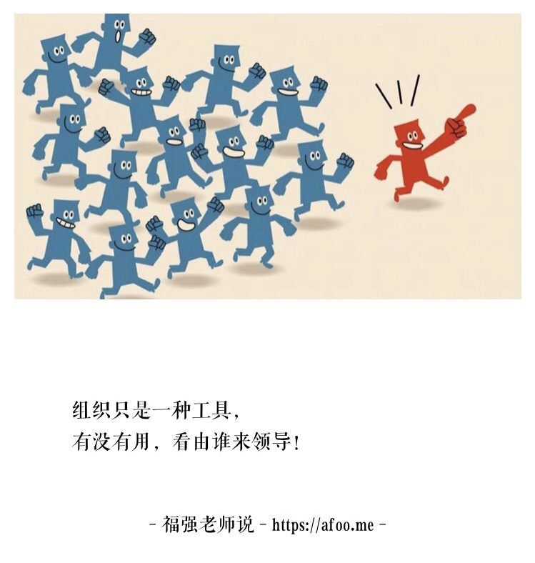

要找CTO， 你有没有想好选I还是选E？
王福强 著
遇到很多CEO找我帮忙介绍CTO或者想找我当CTO，所以，这里给创业公司的CEO们一些如何找CTO的建议， 希望有帮助。
各位CEO们如果在打算找CTO，那么， 你要先问自己一个问题： 你能承受的试错成本是多少？， 为什么这样说那？ 因为关键点就是这个试错成本，引申开来就是，在自己能够承受的试错成本上到底是选择要内生（I)还是要外寻（E）！
内生的理念是，作为CEO，一名领导者，你关注人的成长，所以， 更加愿意从公司内部选拔CTO， 即用人所长（zhǎng）， 我是很认同这种理念的， 但是，带来的成本就是， 人在成长的过程中是会犯错的， 只有跌跌撞撞之后才能成长， 这些犯错的成本往往就无法避免，这就是我说的试错成本。
事情上，技术选型上， 所有谋事层面的决策，犯错都是可以接受的， 而人选择错了， 试错的成本就大了，包括但不限于CTO， 团队中核心骨干的选择和决策往往蕴含着极大的人事试错成本。
人选对了只是第一步， 这些人在成长过程中做决策，做事情等日常中也要试错， 扩散延伸到整个组织中就是，CEO的胸怀必须足够大，否则没法理解和包容这么多的试错成本。
那这些试错成本能不能减少或者避免呢？本质上来说可以减少，但没法避免， 那么如何减少呢？ 这就来到我们要谈到的外寻。
外寻的理念是什么那？ 就是通过借鉴外部第三方在这个领域的专业经验， 以期避免或者减少组织内部在人和事上的试错成本。创业公司因为组织还没成型，没有足够的人才梯队可以内生，所以只能诉诸于外寻， 一些企业因为业务发展太快， 内生速度不够或者目标核心人物的成长速度跟不上，又或者CEO想“买个安心”， 往往也会寻求外寻的方式。
但外寻其实只能帮你尽可能的减少试错成本，而无法完全避免试错成本，这句话怎么理解那？ 我们应该清楚的认识到，外寻的CTO可能不适合这个组织，或者跟你无法密切配合，导致的摩擦多于紧密合作的顺滑，这时候，你就得忍受外寻CTO在组织内部的试错和成长，要么你就得重新外寻，但不管怎么样， 试错成本只是转嫁了，而没有消失，所以说试错成本无法完全避免。
但是，试错成本可以减少， 为什么那？我有个朋友创业之后专门帮创业公司找CTO， 他们的理念就是， 我运用我的专业知识和经验，帮助创业公司找到匹配合适的CTO，这样，就可以帮助CEO们减少因为自己不懂技术而导致的在寻找CTO过程中的各种试错，收取的成本一定会比你自己内生或者外寻导致的试错成本要少，他以专业换取了合理的资源，你又以少于原先试错成本的代价找到了合适的人， 大家皆欢喜。 当然啦， 我司杭州福强科技有限公司为企业提供技术和管理咨询服务也是一样， 本质上都是为企业提供验证过的经验或者领域的专业能力，帮助企业减少试错成本来构建一个双赢的商业闭环。
CTO之所以难找， 其实是因为大多CEO都不是技术专业出身， 加上每个人都是不一样的，在碰撞和磨合的过程中也会经常性的错配，加上企业生命周期不同阶段对人的要求也不一样，所有这些因素纠缠在一起，让整个寻找CTO的过程变得复杂而充满不确定性。
但只要CEO自己有一定的认知， 结合扶墙老师本篇文字提到的内生和外寻的原则及建议，相信各位CEO们现在再去寻找CTO应该不会太过迷茫了吧？！
Good Luck，如果感觉不lucky，也可以找我帮忙 ；0）
「为AI疯狂」星球上，扶墙老师正在和朋友们讨论有趣的AI话题，你要不要⼀起来呀？^-^
这里
- 不但有及时新鲜的AI资讯和深度探讨
- 还分享AI工具、产品方法和商业机会
- 更有体系化精品付费内容等着你，加入星球(https://t.zsxq.com/0dI3ZA0sL) 即可免费领取。(加入之后一定记得看置顶消息呀！)

存量的时代，省钱就是赚钱。
在增量的时代，省钱其实是亏钱。
避坑儿是省钱的一种形式，更是真正聪明人的选择！
弯路虽然也是路，但还是能少走就少走，背后都是高昂的试错成本。
订阅「福报」，少踩坑，少走弯路，多走一步，就是不一样的胜率！